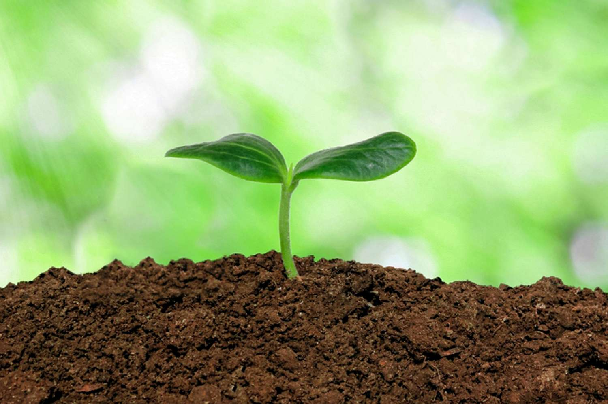

Soil(ent) Green
Soil is a natural resource that forms from a mixture of mineral particles, organic matter, water, air, and living organisms. It is the upper layer of the Earth's surface where plants grow and is essential for supporting life on our planet. Soil is classified based on its texture, structure, and composition, and is vital for a range of ecosystem services. However, it is threatened by human activities such as deforestation, agricultural practices, and urbanization, leading to soil degradation and loss.
Soilent Green, on the other hand, is a science fiction movie from 1973 that portrays a dystopian future where the population relies on processed food made from human remains, including dead bodies. The name Soylent Green comes from the food's brand name, and the movie's plot revolves around a character who discovers the truth behind the food's origin. The movie is a cautionary tale about the consequences of environmental degradation and the need for sustainable practices to ensure the health and well-being of our planet and its inhabitants.
Fun Fact about the assignment Soil(ent) Green
Soilent Green, on the other hand, is a science fiction movie from 1973 that portrays a dystopian future where the population relies on processed food made from human remains, including dead bodies. The name Soylent Green comes from the food's brand name, and the movie's plot revolves around a character who discovers the truth behind the food's origin. The movie is a cautionary tale about the consequences of environmental degradation and the need for sustainable practices to ensure the health and well-being of our planet and its inhabitants.

Soils are a crucial component of the Earth's ecosystems and play a vital role in supporting human life. Learning about soils is important for several reasons. Firstly, soils are the foundation for plant growth, and thus are essential for food production and sustaining terrestrial biodiversity. Understanding soil properties and processes is critical for maintaining healthy soils and increasing agricultural productivity. Secondly, soils are important for regulating the global carbon cycle and mitigating climate change. Soils store large amounts of carbon, and their management can either contribute to or help reduce greenhouse gas emissions. Thirdly, soils are a finite resource and their degradation can have negative impacts on the environment and human well-being. By understanding the properties and processes that govern soil formation and degradation, we can develop sustainable soil management practices that support both ecosystem health and human needs. Overall, learning about soils is critical for understanding and addressing environmental challenges such as food security, climate change, and soil degradation.

The title of this Assignment and Slide that I made about soils is based of the movie Soylent Green which is a movie taken place in a semi-apocolyptic world where they make this food ration thats called "soylent green" which they later find is made of people.